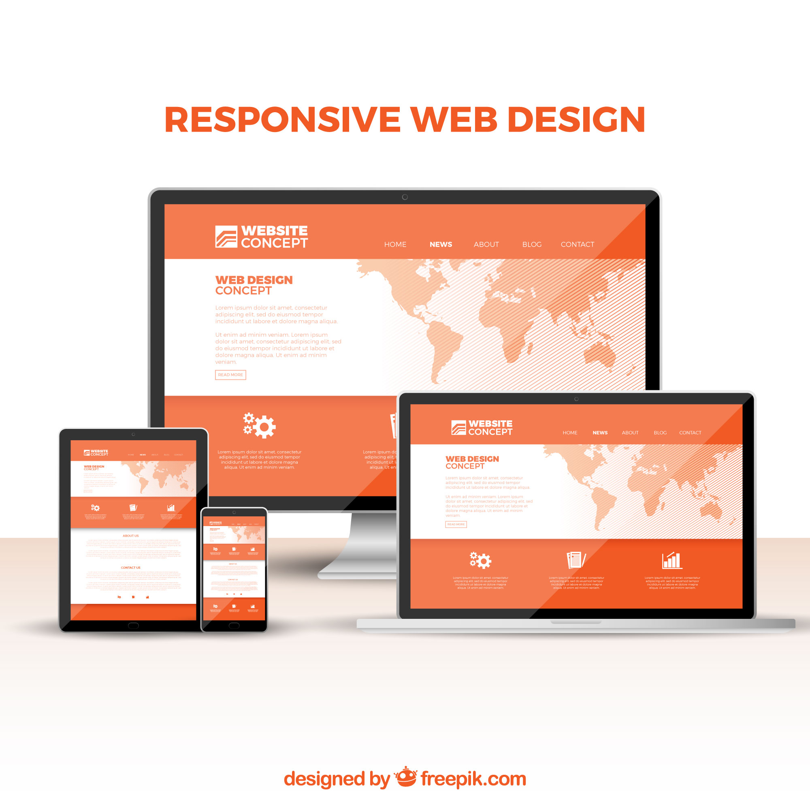
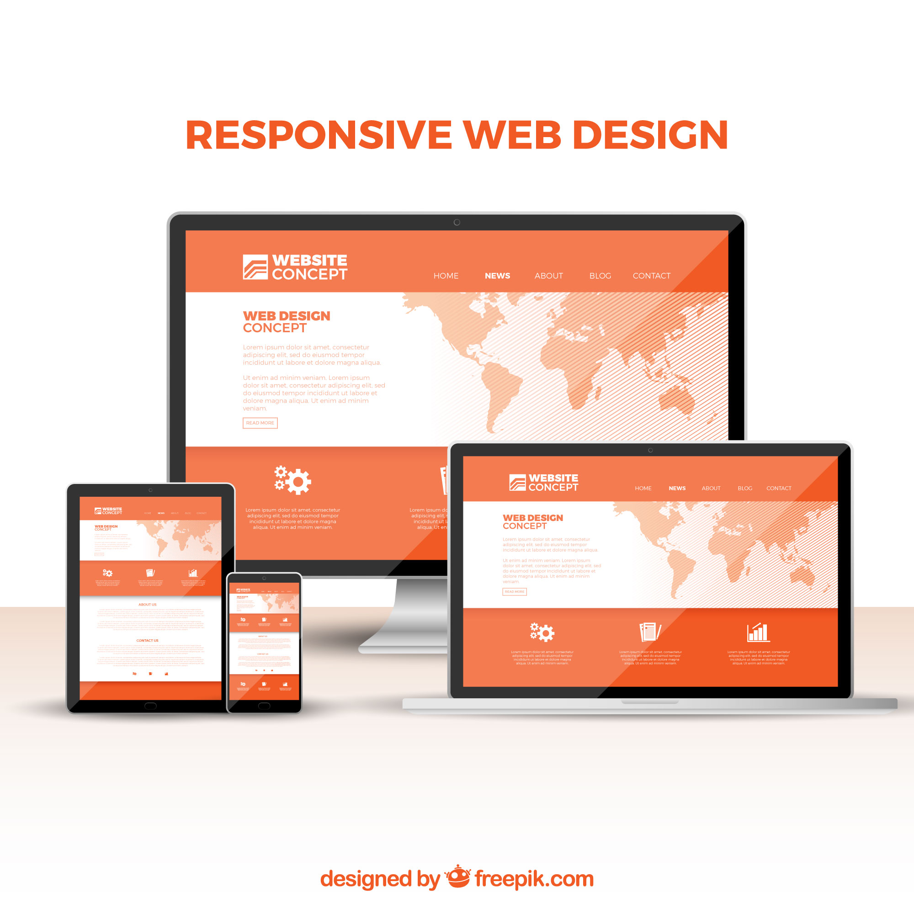
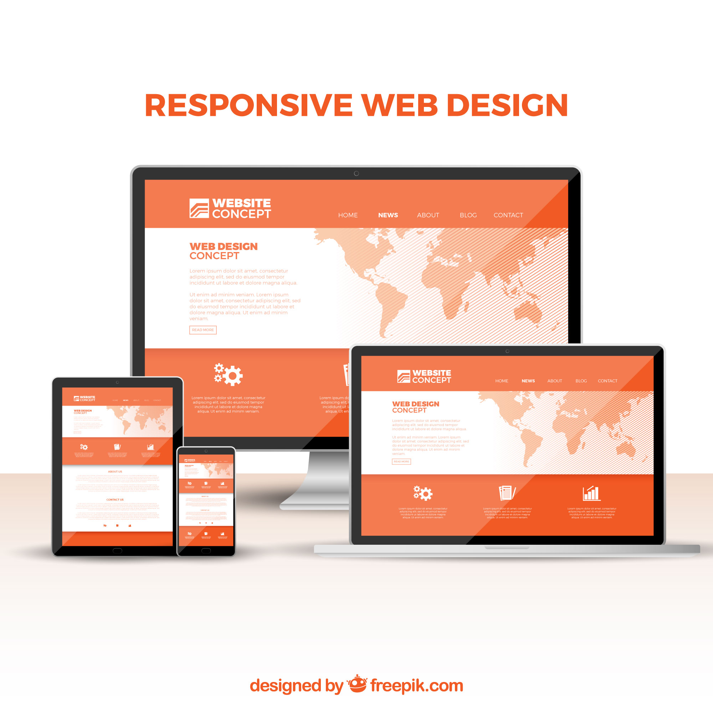

Thanks for choosing me to be your best web designer
@masangakevin60gmail.com

Web services provided include
1.Web Design & Development
Custom Web Design: Designing a unique website layout, structure, and user interface (UI) that aligns with the client's brand and goals.
Responsive Design: Ensuring that the website is mobile-friendly and looks great on all devices (desktops, tablets, smartphones).
User Experience (UX) Design: Optimizing the website's usability, navigation, and overall experience to keep visitors engaged and ensure ease of use.User Experience (UX) Design: Optimizing the website's usability, navigation, and overall experience to keep visitors engaged and ensure ease of use.
Prototyping & Wireframing: Creating wireframes or prototypes to plan the website’s structure before actual development.
2. Front-End Development
HTML/CSS Development: Coding the structure (HTML) and styling (CSS) of web pages.
Responsive Web Design: Using techniques like CSS media queries to make websites adapt to various screen sizes
3.Back-End Development
Combining Front-End & Back-End: A full-stack developer handles both the client-side and server-side aspects of a website, providing an end-to-end solution.Server-Side Scripting: Writing server-side code in languages such as PHP, Node.js, Python, Ruby, or Java to handle user requests and interact with databases.
Database Management: Designing and managing databases (SQL or NoSQL) to store and retrieve data efficiently.
PI Development & Integration: Creating and integrating APIs (RESTful, GraphQL) to enable communication between the website and external services (e.g., payment gateways, third-party apps).
4. Full-Stack Development
Combining Front-End & Back-End: A full-stack developer handles both the client-side and server-side aspects of a website, providing an end-to-end solution.
5. E-commerce Development
E-commerce Website Development: Building online stores with platforms like WooCommerce (WordPress), Shopify, Magento, or custom solutions.
Payment Gateway Integration: Integrating payment systems like PayPal, Stripe, and other methods to handle transactions securely.
6. Web Security
SSL Certificate Implementation: Installing SSL certificates to ensure secure browsing with HTTPS.
Security Audits: Conducting vulnerability assessments and addressing any potential security issues (e.g., SQL injection, cross-site scripting).
GDPR Compliance: Ensuring that the website complies with data protection laws like GDPR, particularly for sites that handle sensitive user data.
7. Website Maintenance & Support
Bug Fixing & Updates: Maintaining the website, fixing bugs, and updating software or content as needed.
Security Updates & Patches: Keeping the website secure by applying patches and updates to software components, plugins, or frameworks.
Backup Services: Regular website backups to prevent data loss.
8.Web Hosting & Deployment
Web Hosting Setup: Assisting with choosing a hosting provider and configuring the server environment.
Deployment: Deploying the website to a live server and configuring hosting settings for optimal performance.
Domain Name Management: Assisting clients in registering and managing domain names.
9. Website Analytics & Tracking
Google Analytics Setup: Setting up Google Analytics or other tracking tools to measure website traffic, user behavior, and conversions.
Conversion Rate Optimization (CRO): Analyzing user behavior and suggesting improvements to increase conversions (sales, leads, sign-ups).
10. Web Application Development
Custom Web Applications: Developing complex, dynamic web applications (e.g., CRMs, project management tools, SaaS products).
Real-time Features: Implementing real-time features like live chat, notifications, or collaborative tools using WebSockets or other technologies.
11. Progressive Web Apps (PWA)
PWA Development: Building web apps that function like native mobile apps, with offline capabilities and push notifications.
12. Consulting & Strategy
Digital Strategy: Advising clients on how to use their website and web presence to achieve their business goals.
Site Audits & Optimization Plans: Conducting comprehensive audits of existing websites and recommending ways to improve performance, design, and usability.
13.Web Accessibility
ADA Compliance: Ensuring websites are accessible to people with disabilities by following WCAG (Web Content Accessibility Guidelines).
Screen Reader Compatibility: Making sure the website is usable with screen readers for visually impaired users.


 
